<!DOCTYPE lake>
<h2 data-lake-id="DluZW" id="DluZW"><span data-lake-id="uf3286b80" id="uf3286b80">学习目标</span></h2><ul list="u7f70d482"><li data-lake-id="ucb8a521a" fid="u4f6964ed" id="ucb8a521a"><span data-lake-id="u260f9486" id="u260f9486">了解MinGW的安装</span></li><li data-lake-id="u76a96bc2" fid="u4f6964ed" id="u76a96bc2"><span data-lake-id="u5c1a0775" id="u5c1a0775">了解CMake的安装</span></li><li data-lake-id="u061c3ff0" fid="u4f6964ed" id="u061c3ff0"><span data-lake-id="u7d7c9af9" id="u7d7c9af9">了解vscode的安装</span></li><li data-lake-id="udededb5c" fid="u4f6964ed" id="udededb5c"><span data-lake-id="u0fed3cc5" id="u0fed3cc5">可以使用vscode运行代码</span></li></ul><h2 data-lake-id="yBTKo" id="yBTKo"><span data-lake-id="ua1935480" id="ua1935480">学习内容</span></h2><h3 data-lake-id="pyCYi" id="pyCYi"><span data-lake-id="uede29758" id="uede29758">MinGW安装</span></h3><ol list="ubc0ccdec"><li data-lake-id="ufe028246" fid="uf3c42d5f" id="ufe028246"><span data-lake-id="u4fe76ab9" id="u4fe76ab9">下载安装包 </span><a data-lake-id="u7e98fc12" href="https://sourceforge.net/projects/mingw-w64/files/Toolchains%20targetting%20Win64/Personal%20Builds/mingw-builds/8.1.0/threads-win32/sjlj/x86_64-8.1.0-release-win32-sjlj-rt_v6-rev0.7z" id="u7e98fc12" rel="noopener noreferrer" target="_blank"><span data-lake-id="ub2582799" id="ub2582799">MinGW W64下载链接</span></a></li><li data-lake-id="u13e5b24c" fid="uf3c42d5f" id="u13e5b24c"><a data-lake-id="u6c204d68" href="https://sourceforge.net/projects/mingw-w64/files/mingw-w64/mingw-w64-release/" id="u6c204d68" rel="noopener noreferrer" target="_blank"><span data-lake-id="ueec3f37e" id="ueec3f37e">https://sourceforge.net/projects/mingw-w64/files/mingw-w64/mingw-w64-release/</span></a></li><li data-lake-id="uddd6fda8" fid="uf3c42d5f" id="uddd6fda8"><span data-lake-id="uaa2968ac" id="uaa2968ac">将下载的压缩包解压，解压目录就是安装目录，记录这个目录，需要将这个目录配置为环境变量。</span></li><li data-lake-id="u9c954bd6" fid="uf3c42d5f" id="u9c954bd6"><span data-lake-id="u31fdcf21" id="u31fdcf21">打开设置，进行</span><code data-lake-id="u10fab977" id="u10fab977"><span data-lake-id="u765234e5" id="u765234e5">系统</span></code><span data-lake-id="u8028d71a" id="u8028d71a">,点击</span><code data-lake-id="u1713987f" id="u1713987f"><span data-lake-id="u711309d6" id="u711309d6">系统信息</span></code></li></ol><p data-lake-id="ua8459f5d" id="ua8459f5d" style="padding-left: 2em">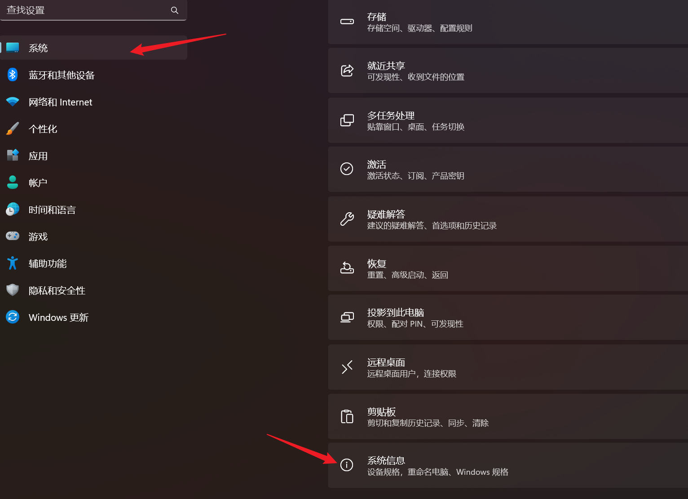</p><p data-lake-id="u6276c4e5" id="u6276c4e5" style="padding-left: 2em"><span data-lake-id="u9cc27e68" id="u9cc27e68">点击</span><code data-lake-id="u9b22b3c5" id="u9b22b3c5"><span data-lake-id="ud7f4acdc" id="ud7f4acdc">高级系统设置</span></code></p><p data-lake-id="u90754e26" id="u90754e26" style="padding-left: 2em">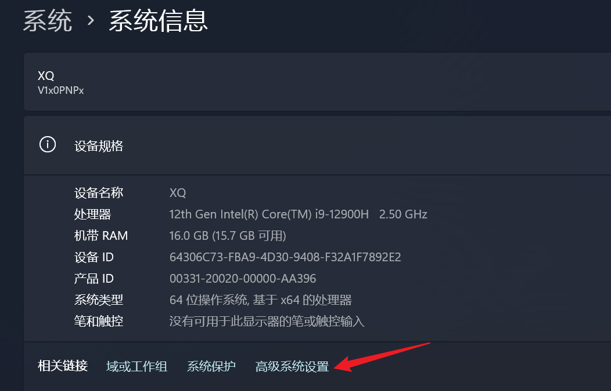</p><p data-lake-id="u9457c86b" id="u9457c86b" style="padding-left: 2em"><span data-lake-id="uf2980dca" id="uf2980dca">进入</span><code data-lake-id="ud3b0fa7b" id="ud3b0fa7b"><span data-lake-id="u2195eb0b" id="u2195eb0b">环境变量</span></code></p><p data-lake-id="u11374a65" id="u11374a65" style="padding-left: 2em">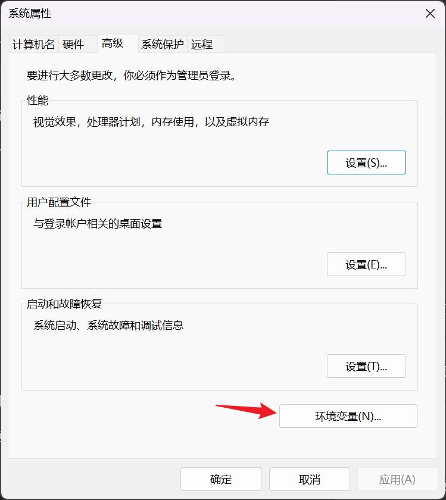</p><p data-lake-id="ub709e4ee" id="ub709e4ee" style="padding-left: 2em"><span data-lake-id="ua5d33419" id="ua5d33419">点击</span><code data-lake-id="u1f688252" id="u1f688252"><span data-lake-id="u102623b6" id="u102623b6">新建</span></code><span data-lake-id="u529c6095" id="u529c6095">创建系统环境变量</span></p><p data-lake-id="ucfece9a1" id="ucfece9a1" style="padding-left: 2em">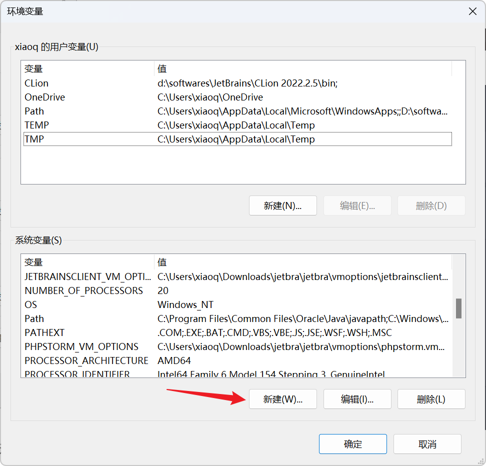</p><p data-lake-id="u69c7a7dd" id="u69c7a7dd" style="padding-left: 2em"><span data-lake-id="u2bc4cb22" id="u2bc4cb22">变量名称为MinGW</span></p><p data-lake-id="u467c7b72" id="u467c7b72" style="padding-left: 2em"><span data-lake-id="uacb47d3c" id="uacb47d3c">变量值为MinGW的安装目录</span></p><p data-lake-id="u4d840318" id="u4d840318" style="padding-left: 2em">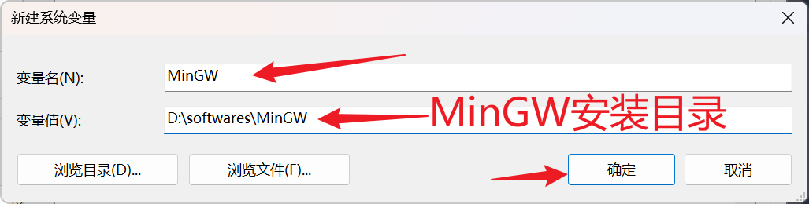</p><p data-lake-id="u9a0ec4ab" id="u9a0ec4ab" style="padding-left: 2em"><span data-lake-id="u689c5220" id="u689c5220">选中</span><code data-lake-id="ucaf43237" id="ucaf43237"><span data-lake-id="ue12ff859" id="ue12ff859">Path</span></code><span data-lake-id="ua01dba62" id="ua01dba62">,然后点击编辑</span></p><p data-lake-id="u1fb38370" id="u1fb38370" style="padding-left: 2em">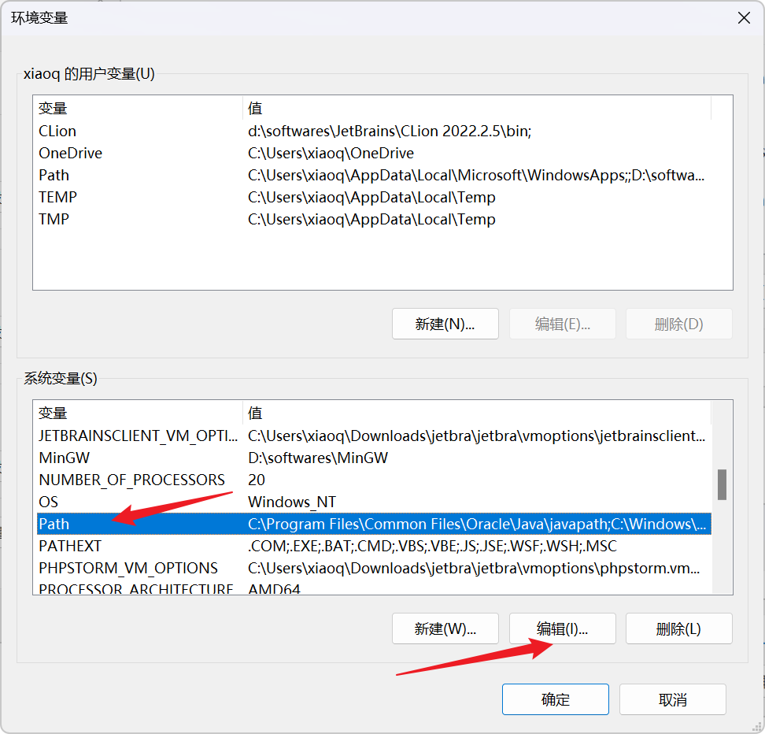</p><p data-lake-id="u8e771d3e" id="u8e771d3e" style="padding-left: 2em"><span data-lake-id="u1f66a3e8" id="u1f66a3e8">进入编辑页面，点击</span><code data-lake-id="ub1ff0b36" id="ub1ff0b36"><span data-lake-id="u01c63b6a" id="u01c63b6a">新建</span></code></p><p data-lake-id="uba54ef70" id="uba54ef70" style="padding-left: 2em">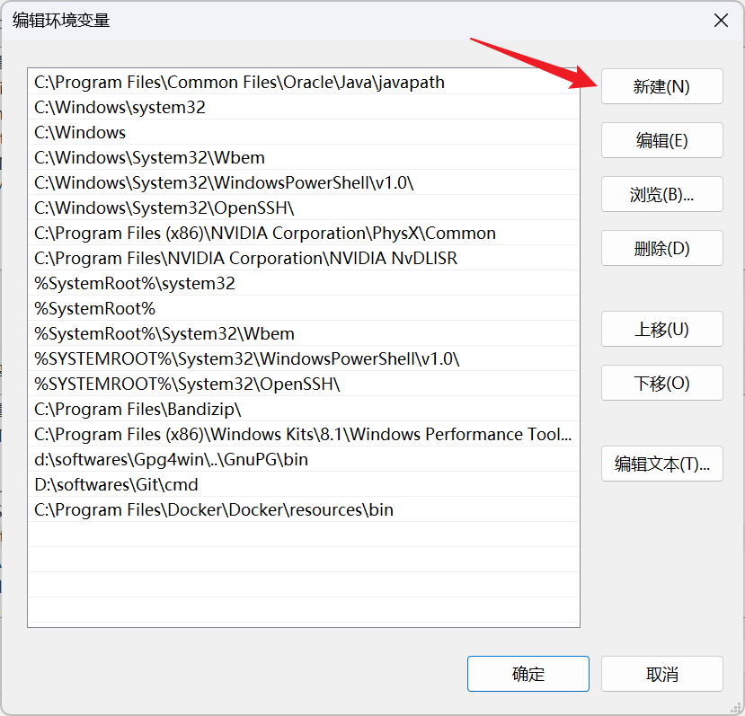</p><p data-lake-id="u448e4299" id="u448e4299" style="padding-left: 2em"><span data-lake-id="u674b55ad" id="u674b55ad">在创建的内容中填入 </span><code data-lake-id="uf7b268e3" id="uf7b268e3"><span data-lake-id="ucc4a110f" id="ucc4a110f">%MinGW%\bin</span></code><span data-lake-id="u06c1dafb" id="u06c1dafb">,然后点击</span><code data-lake-id="ubcfafe33" id="ubcfafe33"><span data-lake-id="ued0364dd" id="ued0364dd">确认</span></code></p><p data-lake-id="ud994e148" id="ud994e148" style="padding-left: 2em">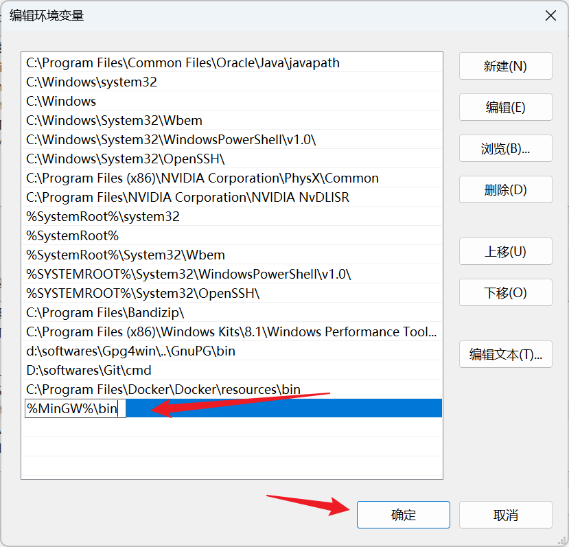</p><p data-lake-id="uaa7b5dbb" id="uaa7b5dbb" style="padding-left: 2em"><span data-lake-id="u3e857589" id="u3e857589">点击</span><code data-lake-id="u40900738" id="u40900738"><span data-lake-id="u06c4a777" id="u06c4a777">确定</span></code><span data-lake-id="u92666913" id="u92666913">完成配置</span></p><p data-lake-id="ub210cb91" id="ub210cb91" style="padding-left: 2em">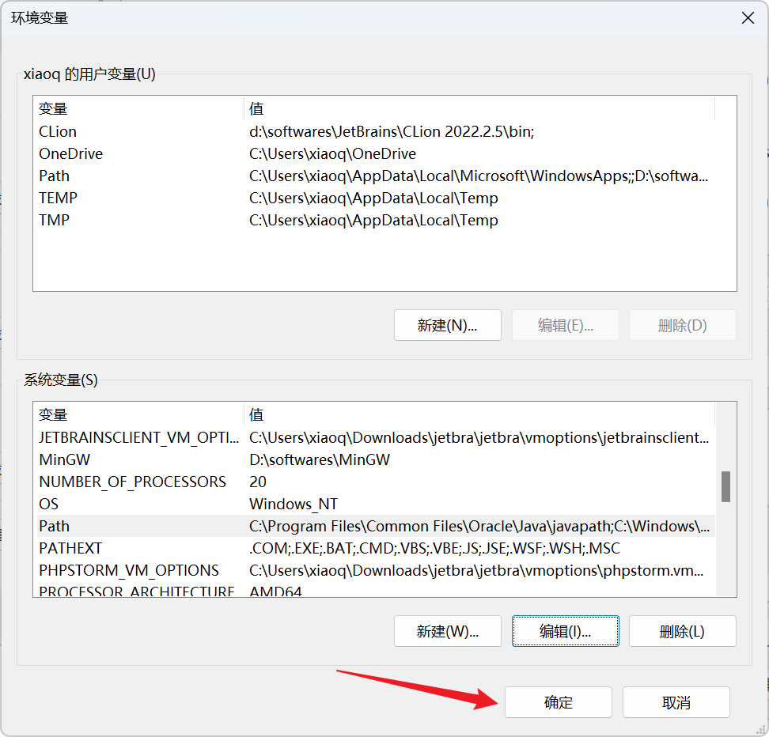</p><ol list="uc451ad26" start="5"><li data-lake-id="ub0e40984" fid="u3ff685f9" id="ub0e40984"><span data-lake-id="u53278e64" id="u53278e64">打开命令行，输入</span><code data-lake-id="ua540a4b7" id="ua540a4b7"><span data-lake-id="u5ef2f021" id="u5ef2f021">g++ --version</span></code><span data-lake-id="u5b818a76" id="u5b818a76">进行校验，是否配置环境变量成功，不成功，则重复上一个动作.</span></li></ol><h3 data-lake-id="ry09I" id="ry09I"><span data-lake-id="u3b28ee61" id="u3b28ee61">CMake安装</span></h3><ol list="u72a6ba33"><li data-lake-id="u1ab026b8" fid="uc65bca9e" id="u1ab026b8"><span data-lake-id="uad129dfa" id="uad129dfa">下载。 </span><a data-lake-id="ub698d0de" href="https://cmake.org/download/" id="ub698d0de" rel="noopener noreferrer" target="_blank"><span data-lake-id="ua74f0700" id="ua74f0700">https://cmake.org/download/</span></a><span data-lake-id="u27b6fc59" id="u27b6fc59"> 下载对应版本，此教程下载的是windows x64 msi版本</span></li><li data-lake-id="u175c99c0" fid="uc65bca9e" id="u175c99c0"><span data-lake-id="ub7efbcc6" id="ub7efbcc6">按照图例，进行安装</span></li></ol><p data-lake-id="ubb50e90a" id="ubb50e90a" style="padding-left: 2em">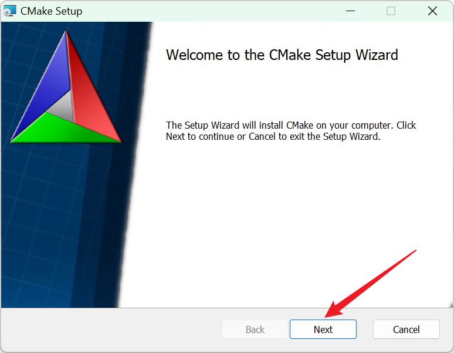</p><p data-lake-id="ua3e5128f" id="ua3e5128f" style="padding-left: 2em">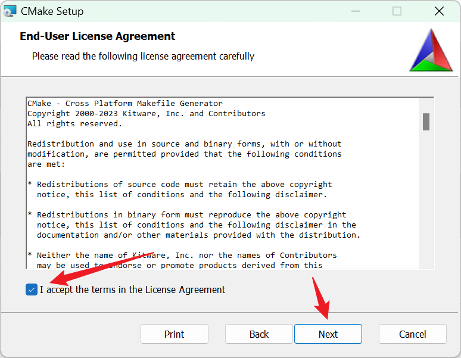</p><p data-lake-id="u05af1e32" id="u05af1e32" style="padding-left: 2em"><span data-lake-id="ucf9e2caf" id="ucf9e2caf">将CMake配置为系统变量供所有用户使用。</span></p><p data-lake-id="ub8709cad" id="ub8709cad" style="padding-left: 2em">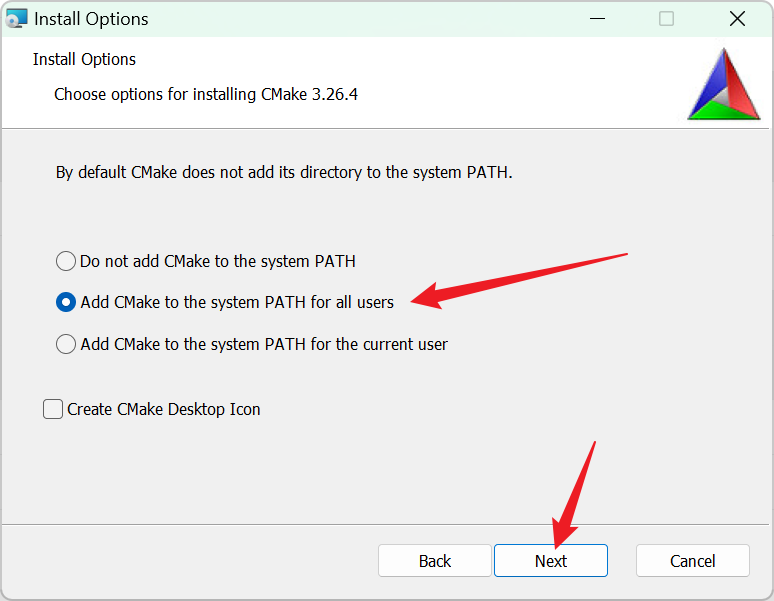</p><p data-lake-id="uff5eda5c" id="uff5eda5c" style="padding-left: 2em">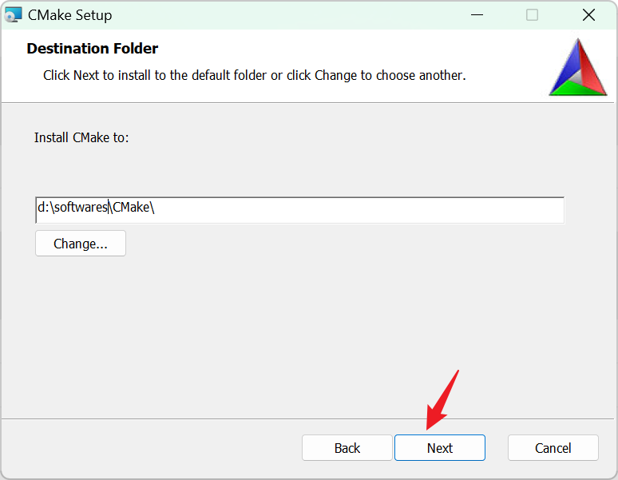</p><p data-lake-id="u5272f17c" id="u5272f17c" style="padding-left: 2em">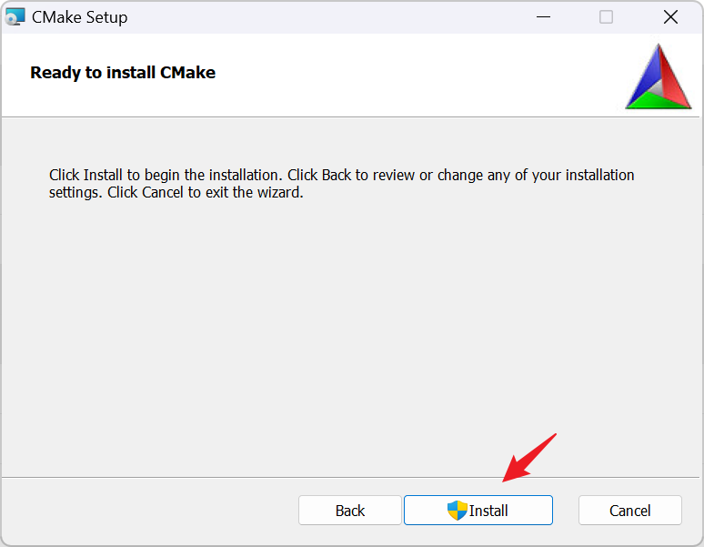</p><p data-lake-id="u7e4b017b" id="u7e4b017b" style="padding-left: 2em">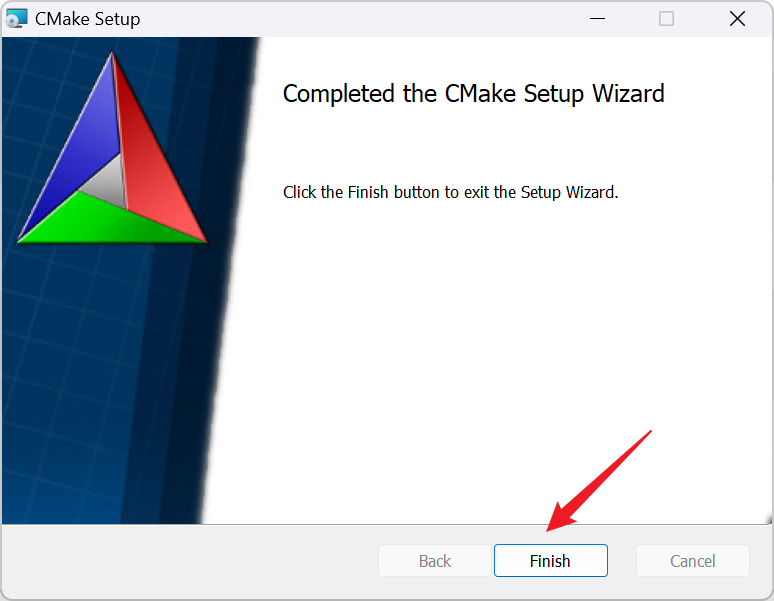</p><p data-lake-id="ub3d17a4f" id="ub3d17a4f"><br/></p><h3 data-lake-id="mxYjL" id="mxYjL"><span data-lake-id="u7715032e" id="u7715032e">VSCode安装</span></h3><ol list="uf07d4dc9"><li data-lake-id="ufe12d777" fid="u63c1a6a2" id="ufe12d777"><span data-lake-id="u35593808" id="u35593808">下载vscode。</span><a data-lake-id="uf400ba1c" href="https://code.visualstudio.com/Download" id="uf400ba1c" rel="noopener noreferrer" target="_blank"><span data-lake-id="ud55e7696" id="ud55e7696">https://code.visualstudio.com/Download</span></a></li><li data-lake-id="uc1b4ff42" fid="u63c1a6a2" id="uc1b4ff42"><span data-lake-id="u6b21b497" id="u6b21b497">双击</span><code data-lake-id="u027dd65a" id="u027dd65a"><span data-lake-id="u2e7d89b2" id="u2e7d89b2">VSCodeUserSetup-x64-1.78.2.exe</span></code><span data-lake-id="ubac0af8f" id="ubac0af8f">进行安装</span></li></ol><h3 data-lake-id="kBIQc" id="kBIQc"><span data-lake-id="u95eb0a14" id="u95eb0a14">VSCode编写第一个程序</span></h3><h4 data-lake-id="oTbvd" id="oTbvd"><span data-lake-id="u5ff391dd" id="u5ff391dd">VSCode插件安装</span></h4><ol list="u7bf23957"><li data-lake-id="ua5e345ec" fid="u3138c137" id="ua5e345ec"><code data-lake-id="uc02069b1" id="uc02069b1"><span data-lake-id="ub6a65a56" id="ub6a65a56">C/C++ Extension Pack</span></code><span data-lake-id="u75d5541e" id="u75d5541e">安装。将</span><code data-lake-id="u32bee4cb" id="u32bee4cb"><span data-lake-id="ufed3aee6" id="ufed3aee6">ms-vscode.cpptools-extension-pack-1.3.0.vsix</span></code><span data-lake-id="ua83b030d" id="ua83b030d">拖拽到vscode中，进行自动安装。</span></li></ol><h4 data-lake-id="hBZb7" id="hBZb7"><span data-lake-id="u188bd128" id="u188bd128">程序编写</span></h4><ol list="u1f3b85d0"><li data-lake-id="ucb0187c4" fid="u33721c08" id="ucb0187c4"><span data-lake-id="ue2176ca2" id="ue2176ca2">在vscode中打开一个文件夹。</span></li></ol><p data-lake-id="u148a2fa6" id="u148a2fa6" style="padding-left: 2em">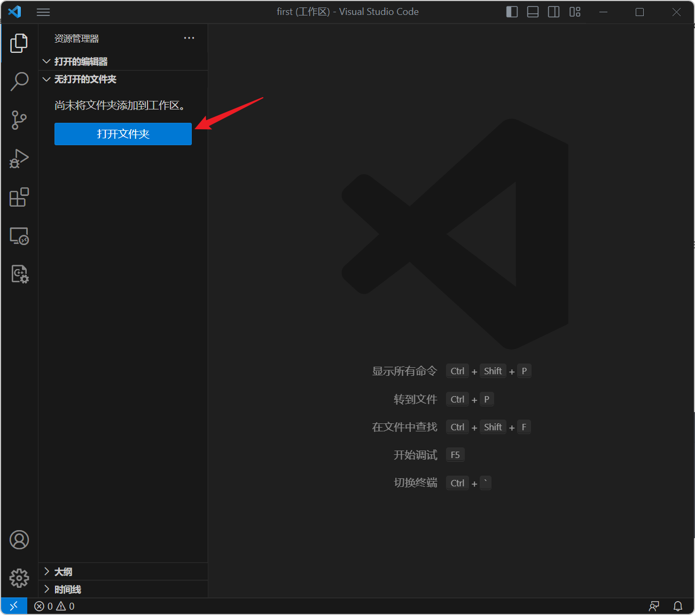</p><p data-lake-id="uc86432b1" id="uc86432b1" style="padding-left: 2em">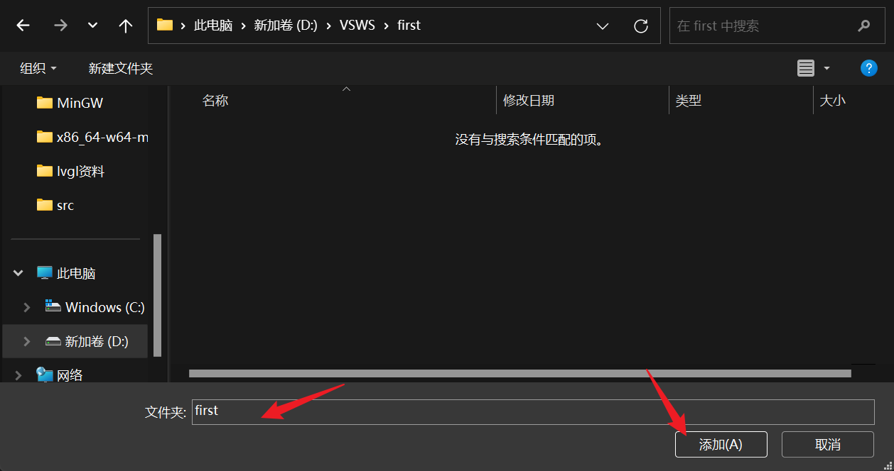</p><p data-lake-id="u1b159102" id="u1b159102" style="padding-left: 2em"><span data-lake-id="u138fddfc" id="u138fddfc">打开后会自动生成一个配置文件</span></p><p data-lake-id="uff91e5e8" id="uff91e5e8" style="padding-left: 2em">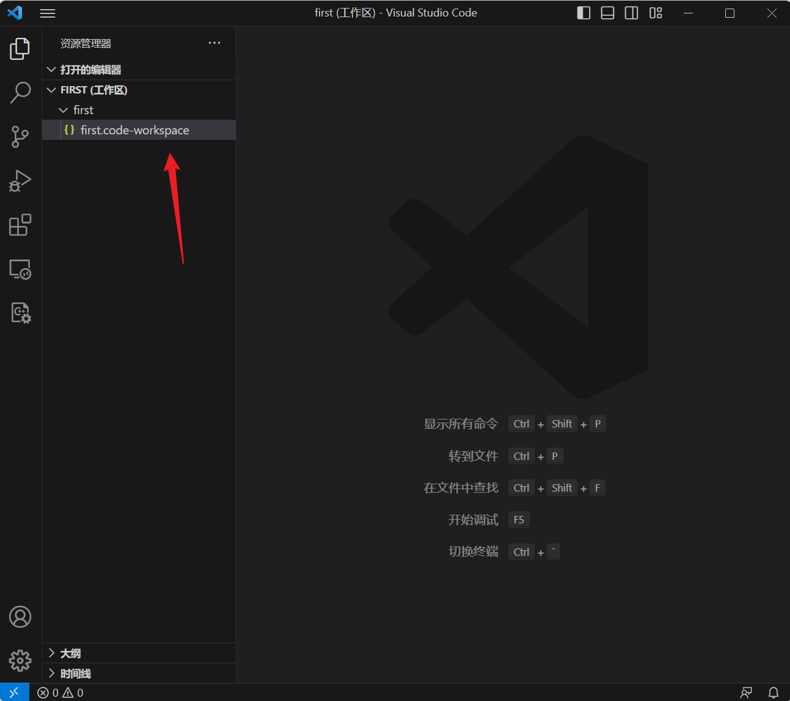</p><ol list="u1f3b85d0" start="2"><li data-lake-id="u3b406cd7" fid="u33721c08" id="u3b406cd7"><span data-lake-id="udd0d043b" id="udd0d043b">在文件夹中新建</span><code data-lake-id="u1f139a46" id="u1f139a46"><span data-lake-id="u05a609c6" id="u05a609c6">hello.c</span></code><span data-lake-id="u312581f4" id="u312581f4">文件，代码内容如下：</span></li></ol><span class="yuque-card-unsupported">[codeblock]</span><ol list="u571ebd93" start="3"><li data-lake-id="u49650f6e" fid="u7b0d6efa" id="u49650f6e"><span data-lake-id="u4e257084" id="u4e257084">点击运行按钮运行。观察运行结果。</span></li></ol><p data-lake-id="ueef8f3ba" id="ueef8f3ba" style="padding-left: 2em"><br/></p><p data-lake-id="ued834979" id="ued834979" style="padding-left: 2em"><br/></p><p data-lake-id="u0baf968c" id="u0baf968c" style="padding-left: 2em">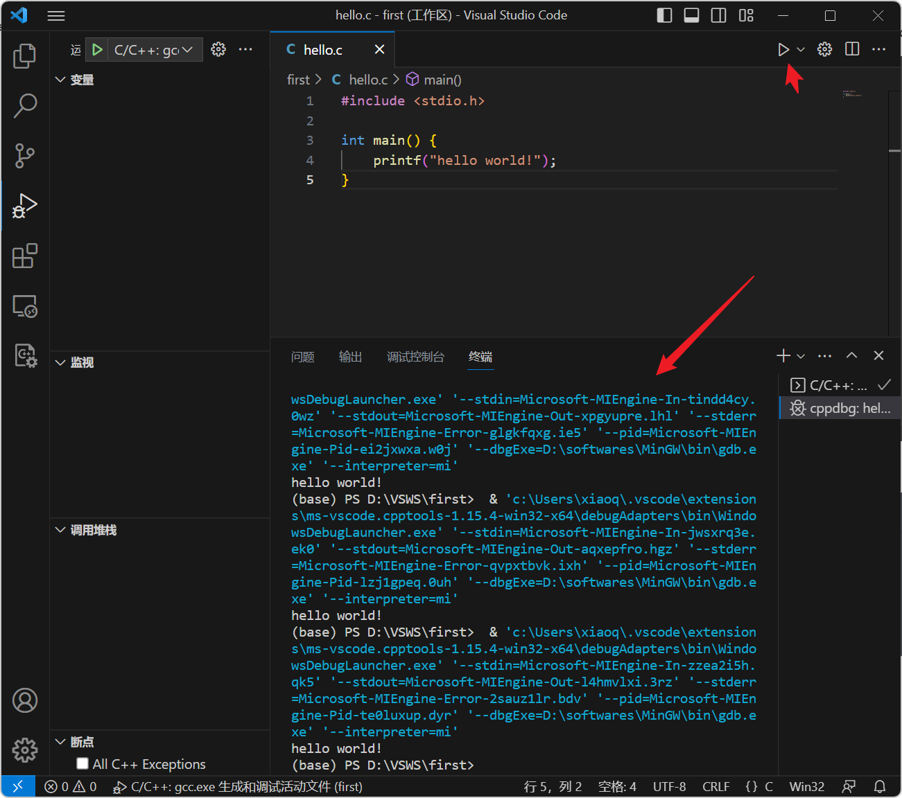</p><h2 data-lake-id="keb0v" id="keb0v"><span data-lake-id="u4e7a09c5" id="u4e7a09c5">作业</span></h2><p data-lake-id="ud754bd5e" id="ud754bd5e"><span data-lake-id="u05c7faa0" id="u05c7faa0">编写hello word程序。</span></p><p data-lake-id="uf2826ad9" id="uf2826ad9"><br/></p><p data-lake-id="uf3e0521e" id="uf3e0521e"><br/></p>